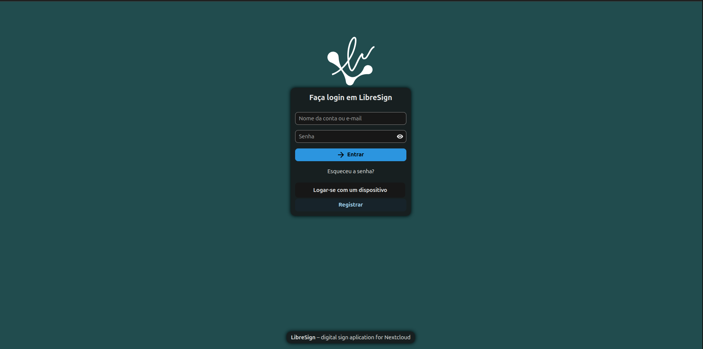
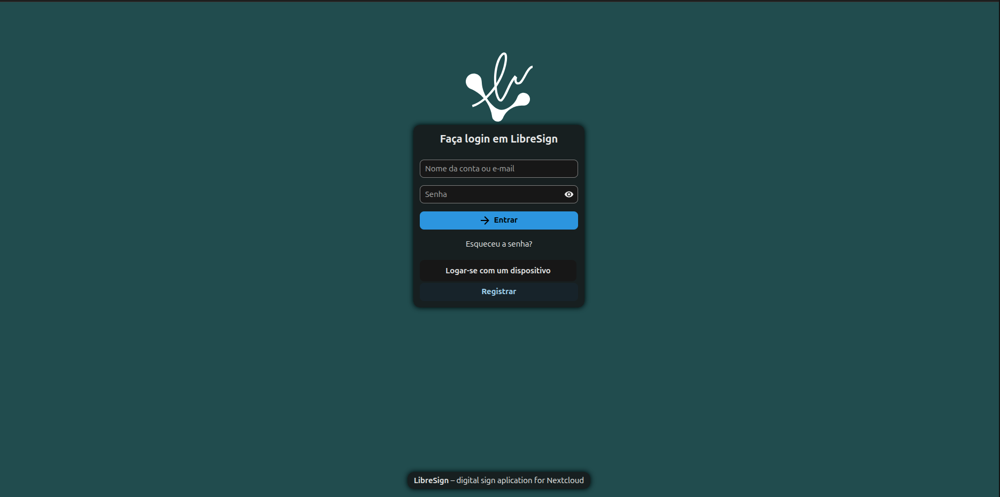

Start
Acess the system
Login

Where to begin?
How to sign a document? Go to Clique aqui.
How to verify the signature? Go to Clique aqui.
How to use LibreSign on Nextcloud? Go to Clique aqui.

How to sign a document? Go to Clique aqui.
How to verify the signature? Go to Clique aqui.
How to use LibreSign on Nextcloud? Go to Clique aqui.